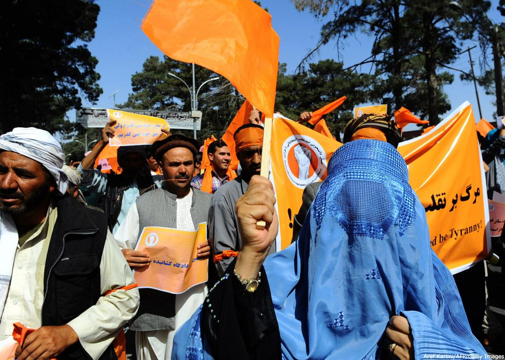

حل و فصل دعاوی انتخاباتی
در سالهای اخیر جامعهی بینالملل بیش از پیش بر دعاوی انتخاباتی تمرکز کرده است. این توجه حاصل مناقشات سیاسی و احساس بیاعتمادی نسبت به نحوهی رسیدگی به شکایات و تجدیدنظرخواهیها است که در بسیاری از کشورها بر روند انتخابات سایه انداخته است. نظامهای قضایی و نهادهای انتخاباتی اغلب در تضاد با یکدیگر قرار میگیرند، و تناقضات قوانین محلی یا وجود حیلههای قانونی به آیینهای دوگانهی تجدیدنظرخواهی، مهلتهای گیجکننده، طرح دعاوی مشابه در نهادهای مختلف، فقدان ضمانت اجرای مشخص برای عدم رعایت قانون، و بروز اشکال در اجرای قانون منجر شدهاند.

دعاوی انتخاباتی ذاتیِ انتخاباتاند. اعتراض به نتایج یا شیوهی برگزاری انتخابات نباید نشانه ضعف سیستم انتخاباتی تلقی گردد، بلکه گواهی است بر قوت، سرزندگی و بازبودن نظام سیاسی. بنابراین افزایش تعداد و تنوع دعاوی مرتبط با انتخابات تا حدی ناشی از افزایش آگاهی عمومی از فرایند احقاق حق است. با این وجود، هنگامی که نظامهای حقوقی و انتخاباتی خود هنوز در حال توسعه هستند این روند مشکلآفرین خواهد بود.
مسائل بنیادی در نظریههای مربوط به حل و فصل دعاوی انتخاباتی عبارتند از:
- اعتبار نتایج و در نتیجه حق اعتراض به نتایج انتخابات،
- اقدامات مقامات مسئول انتخابات برای رفع مشکلات که موید حق دادرسی برای جبران موارد نقض حق رای است،
- دادرسی کیفری علیه کسانی که تلاش کردهاند روند انتخابات را به انحراف بکشانند یا به انحراف کشاندهاند.
این موارد مانعه الجمع نیستند و میتوان هرکدام را در ترکیب با دیگری به کار برد.
ورای این صورتبندی ساده، دولتها برای حل و فصل دعاوی انتخاباتی از رویکردها و سازوکارهای متفاوتی که برگرفته از سنتهای حقوقی و سیاسی مختلف است استفاده میکنند. سیستم منتخب، بر اساس نهادها و رویههایی که در این فرایند دخیل هستند، عمدتا از چارچوب کلی انتخابات ریشه میگیرد. با وجودی که در بیشتر کشورهای دموکراتیکِ باثبات (مانند بریتانیا، آلمان، فرانسه و ایتالیا) حل و فصل دعاوی انتخاباتی از طریق نهادهای اجرایی و قضایی عادی و مطابق با آیین ویژهای انجام میگیرد، در بیشتر کشورهای در حال توسعه صلاحیت قضایی در مورد دعاوی انتخاباتی بنا به قانون انتخابات از آن دادگاههای عادی و کمیسیونهای ویژهی دائمی یا موقتی است. روش دیگر وجود یک دادگاه دائم انتخاباتی است که مستقیما موظف به حل و فصل دعاوی انتخاباتی باشد. این روش شیوهی مرسوم در آمریکای مرکزی و برخی از کشورهای آمریکای جنوبی است اما در یونان و کشورهای اروپای شرقی نیز مورد استفاده قرار میگیرد.
علاوه بر این، الگوهای حقوقی متفاوتی نیز وجود دارند که دعاوی انتخاباتی با ارجاع به آنها مورد رسیدگی قرار میگیرند. اتخاذ تصمیم نهایی در هر دادخواست ممکن است در صلاحیت و سلسله مراتب کمیسیونهای انتخاباتی باقی بماند، یا به طور انحصاری در دادگاههای عادی به آنها رسیدگی شود و یا در صلاحیت دادگاه قانون اساسی باشد که در این مورد به مثابه یک دادگاه انتخاباتی عمل خواهد کرد. افزون بر این، ممکن است طرق جبرانی متفاوتی مقرر شوند، از جمله اقدامات اجرایی از سوی دولت یا مقامات انتخاباتی برای اصلاح مشکل، و یا تعقیب کیفری تقلب انتخاباتی. نهایتا، در کشورهایی که نظام حقوقی بر پایه نظام مدون سوسیالیستی است یک ویژگی منحصر به فرد و موثر بر نحوه حل و فصل دعاوی انتخاباتیْ حضور قدرتمند دادستان در همه مراحل رسیدگی است.
روشن است که یک روش واحد نمیتواند به طور یکسان در همه کشورها مفید باشد. الگوی مناسب تا حد زیادی به سطح ثبات فرایند دموکراتیک در آن کشور بستگی دارد. با این همه، گزینههای انتخابی یک کشور بینهایت نیستند و باید بر طبق معیارهای بینالمللی اعمال شوند. حق مطالبه احقاق حق ناشی از نقض حقوق بشر خود یکی از حقوق بشر است. همه حقوق مرتبط با حق رای نیز همین حکم را دارند.
استانداردهای بینالمللی برای مواجهه با دعاوی انتخاباتی
حل و فصل دعاوی انتخاباتی در اسناد حقوق بینالملل به طور خاص مورد اشاره قرار نگرفته است. به علاوه، در مورد معیارهای عام برای حل و فصل «منصفانه، اثربخش، بیطرفانه و به موقع» دعاوی انتخاباتی در جامعهی بینالملل اجماعی محرز نیست. با این حال، با تکیه بر قواعد موجود و استلزامات حقوق بینالملل، تشخیص حدود قابل قبول برای نظامهای حاکم بر حل و فصل دعاوی انتخاباتی ممکن به نظر میرسد.
سند سازمان امنیت و همکاری اروپا ( CSCE) مربوط به سال ۱۹۹۰ در کپنهاگ، که میتوان آن را جامعترین سند بینالمللی مربوط به انتخابات «آزاد و منصفانه» دانست، به طور مستقیم به دعاوی انتخاباتی اشاره نمیکند. با این حال، تعهدات انتخاباتی این سند بدون وجود قدرتی برای اعمال آنها وعدههایی پوچ خواهند بود. برای نمونه، اگر به موجب قانون حق اقامه دادرسی برای استیفای حق رای تضمین نشده باشد، حق رای تنها مفهومی مجرد باقی خواهد ماند. همچنین، حق مطالبه احقاق حق در دادگاه نتیجه فرعی حق کاندیداهایی است که «تعداد آرای لازم را به موجب قانون کسب کردهاند» تا «به نحو مقتضی در سمت قانونی گمارده شوند». حقوق مرتبط با انتخابات بدون حمایت قانون ارزش چندانی نخواهند داشت.
وانگهی، هیچ نظام عادلانه و معتبری برای حل و فصل دعاوی انتخاباتی متصور نیست مگر آن که ملزومات یک نهاد قضایی مستقل و نیز رعایت تشریفات الزامی قانون به موجب قانون و در عمل تضمین شده باشد. این موارد شامل حق دادرسی عادلانه، حق جبران اثربخش زیانها، و دسترسی به محاکم مستقل نیز میشود. این قواعد و حقوق رکن اساسی یک نظام برای تضمین حاکمیت قانون هستند. با این حال، در حوزه حل و فصل دعاوی انتخاباتی از آنجا که نهادهای فراقضایی در این امر دخالت دارند سیستم خاصی برای اجرای قانون لازم است.
با این همه، این امر مستلزم معیارهایی به خصوص نیست تا همه نظامهای حل و فصل دعاوی انتخاباتی موظف به رعایت آن باشند. این واقعیت که حق تعقیب مقامات مربوطه برای استیفای کلیه حقوق مرتبط با رایدهی از نفس انتخابات استنباط میشود میتواند معیاری برای کارامدی نظام باشد، اما شیوهها و ابزارهایی که پیشرفت در جهت این معیار را بسنجند به دقت مشخص نیستند. در اسناد مختلف بینالمللی میتوان قراینی یافت که متکی بر هنجارهای فعلی هستند اما تعمیم این موارد بدان گونه که ظرایف خاصِ امرِ حل و فصل دعاوی انتخاباتی لحاظ شوند دشوار است. هیچ یک از این اسناد به مرتبه یک معاهدهنامه نرسیدهاند اما، با توجه به اهمیت تعیین معیارها، به ویژه در مسئله انتخابات، این اسناد ممکن است سر انجام در پیدایش سندی سامانیافته نقش ایفا کنند.
سند «پیشنویس اصول کلی آزادی و عدم تبعیض در حقوق سیاسی»، که سند غیرالزامآور سازمان ملل و مصوب سال ۱۹۶۲ است، برای نخستین بار قدرت اعمال کلیه حقوق رایدهی را با تقریر این امر که هر فرد زیاندیده واجد حق مطالبه جبران در محاکم مستقل و بیطرف خواهد بود به رسمیت میشناسد (بند XIX). همچنین مقرر میدارد که تصمیمات کمیسیونهای انتخاباتی باید در دادگاهها یا دیگر نهادهای مستقل و بیطرف قابل تجدیدنظر باشند (بند VIII، د). متن دیگری در سازمان ملل به نام «چارچوب تلاشهای آتی» مصوب سال ۱۹۸۹ از «نهادهای ملی» میخواهد که حق رای همگانی و برابر و انتخابات بیطرفانه را از طریق صیانت از شیوههای حل و فصل دعاوی انتخاباتی تضمین کنند (بند III: جنبههای عملیاتی).
دیگر متون اصلی در دیگر سازمانهای بینالمللی تضامینِ حداقلیِ لازم برای حصول اطمینان از حفظ حقوق سیاسی و انتخاباتی را خلاصه کردهاند. «اعلامیه معیارهای انتخابات آزاد و منصفانه» حاصل کار شورای بینالمجالس مصوب سال ۱۹۹۴ معنای اختیار «احقاق حق در برابر نقض حقوق سیاسی و انتخاباتی» را با گنجاندن اشاراتی به نقض حقوق کاندیداها، احزاب و مبارزات انتخاباتی گسترش میدهد. به علاوه نیاز به اتخاذ تصمیمات فوری «در طول روند انتخابات» نیز مورد اشاره قرار میگیرد (۴.۶ و ۴.۸). بر خلاف سند سازمان ملل، این سند مسئولیت حل و فصل دعاوی انتخاباتی را بر عهدهی کمیسیونهای انتخاباتی میگذارد (۵.۹). تا اینجا، این اعلامیه قطعا دقیقترین و صحیحترین متن موجود در حوزه حل و فصل دعاوی انتخاباتی است.
از میان اصولی که در این اسناد تشریح شدهاند، دو مولفه عمده را میتوان متمایز کرد:
(۱) حق هر فرد یا هر حزب سیاسی نسبت به مطالبه احقاق حق در برابر نقض حقوق سیاسی و انتخاباتی، از جمله حق رای دادن و حق نامنویسی به عنوان رایدهنده، و نیز حقوق کاندیداشدن، حقوق حزبی و حقوق مبارزات انتخاباتی؛
(۲) مسئولیت دولتها نسبت به تضمین این امر که شکایات مرتبط با روند انتخابات فیالفور در دوره زمانی فرایند انتخابات و به طور موثر از طریق مرجعی مستقل و بیطرف همچون کمیسیون انتخابات یا دادگاهها مختومه میشوند.
در عمل، ارزیابی شیوهای که از راه آن دعاوی انتخاباتی حل و فصل میشوند و سنجش سطح انطباق این شیوهها با حداقلی از معیارهای معین مستلزم وزندهی به عناصر کلیدی زیر است:
صلاحیت قضایی: این مسئله در کشورهایی که دادگاهها و کمیسیونهای انتخاباتی وظیفه حل و فصل دعاوی انتخاباتی را به طور مشترک بر عهده دارند یکی از موضوعات اصلی است. شروط و مقررات مبهم، گنگ یا ناقص در قانون انتخابات یا دیگر قوانین هنجاری ممکن است مسبب سردرگمی نسبت به صلاحیت دادگاهها و کمیسیونهای انتخاباتی به منظور رسیدگی به دعاوی انتخاباتی شود. در انتخابات اخیر در حوزه سازمان امنیت و همکاری اروپا این امر فرصتی فراهم کرد تا طرفین برای حصول نتیجه مطلوب به جستجوی مساعدترین مرجع رسیدگی از میان دادگاهها و کمیسیونهای انتخاباتی بپردازند، که همین مسئله منجر به حدوث مانع و وقوع تاخیر در فرایند برگماشتن کاندیداهای منتخب شده است.
به موقع بودن: قانون انتخابات باید حل و فصل دعاوی را در یک بازهی زمانی که متناسب با روند انتخابات است تضمین کند. حصول اطمینان از این امر که نتیجه انتخابات به تاخیر نخواهد افتاد حائز اهمیت است. این قضیه به طور ضمنی به این معناست که فاصله زمانی میان تنظیم شکایت و رسیدگی به آن بسیار کوتاه است. این الزام به خودی خود برای نظامهای قضایی مشکلساز خواهد بود و مستلزم ملاحظاتی جدی در خصوص کارایی نظام قضایی و رابطه دادگاهها با نهاد اجرایی انتخابات است.
اعمال حق: اجرای صحیح و بهموقع تصمیمات اتخاذ شده از سوی دادگاهها و نهادهای انتخاباتی مسئلهای مهم در زمینه کارایی نظام حل و فصل دعاوی انتخاباتی است. هرچه نهاد اجرایی انتخابات در حل و فصل دعاوی دخالت بیشتری داشته باشد، امر اعمال حق اهمیت بیشتری مییابد. برای مثال، واگذاری قدرت تصمیم گیری نهایی در مورد دعاوی به عالیترین نهاد انتخاباتی بدون وجود شیوهها و ابزارهایی موثر برای اجرای آنها و انجام اقدامات اصلاحی بیمعنا خواهد بود. این امر مسئله نقش محولشده به نهادهای اجرای قانون در روند انتخابات را پیش میآورد. در اغلب موارد، قوه مقننه برای عدم رعایت قانون از جانب نهادهای دولتی، رسانههای جمعی و مقامات رسمی که کمیسیونهای انتخاباتی قدرت و نفوذی بر آنها ندارند ضمانت اجرای کافی در نظر نمیگیرد، در حالی که مجازاتهایی مانند امکان تعلیق یا لغو مجوز حزب یا رد صلاحیت کاندیداها زمینهی سوءاستفاده را فراهم میکنند.
تعقیب کیفری: اخلال در روند انتخابات میتواند موجب تعقیب کیفری شود و (به استثنای چند مورد خلافهای جزئی) ممکن است به مجازاتهای کیفری اعم از جریمه و حبس که تنها در صلاحیت قضایی دادگاهها ست منجر شود. جرایم انتخاباتی و مجازاتهای قانونی در صورت ارتکاب این جرایم باید به صراحت در قوانین کیفری عنوان شود. تعقیب کیفری و اقدامات اجرایی مقامات انتخاباتی برای رفع مشکل را میتوان به موازات یکدیگر به کار گرفت. همچنین، توجه به این مسئله که در چه مواردی برای احقاق حق در دعاوی مطروحه تعقیب کیفری روشی مناسب خواهد بود از اهمیت بهسزایی برخوردار است. به طور خاص، انجام تحقیقات جنایی از سوی نهادهای اجرای قانون یا وزارتخانههای مربوطه باید به صورتی انجام شود که احتمال تبدیل این تحقیقات به عاملی تعیینکننده در انتخابات را خنثی کند یا به حداقل برساند.